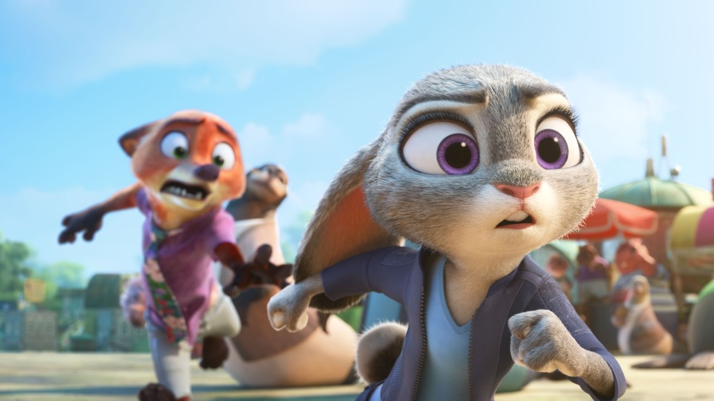

Disney essore ses licences et confirme Zootopia 3 et la Reine des Neiges 3

🛒 En lien avec cet article
Publicité — Liens de partenariat Amazon : une commission peut être reversée, sans surcoût pour vous.
🔥 Top produits tech du moment
Publicité — Liens de partenariat Amazon : une commission peut être reversée, sans surcoût pour vous.
L'intelligence artificielle continue de transformer en profondeur notre quotidien et l'économie. Cette annonce s'inscrit dans une dynamique où les grands acteurs accélèrent leurs investissements et leurs lancements.
Ce qu'il faut retenir
Assommé par des choix créatifs douteux et une panne d'idées neuves, le géant américain Disney se raccroche désespérément à ses vieilles recettes.
L'annonce de Zootopie 3 et La Reine des Neiges 3 lors du D23, couplée au retour négocié de Johnny Depp en Jack Sparrow, confirme une stratégie cynique : recycler le passé plutôt que prendre le moindre risque.
Pourquoi c'est important
Cette information marque une nouvelle étape dans le développement de l'intelligence artificielle. Elle concerne directement les utilisateurs de technologies numériques et mérite d'être suivie de près dans les prochaines semaines. Disney essore ses licences et confirme Zootopia 3 et la Reine des Neiges 3 est ainsi un signal à prendre en compte pour comprendre les évolutions du secteur.
En résumé
Retenez l'essentiel : Disney essore ses licences et confirme Zootopia 3 et la Reine des Neiges 3. Cette actualité a été rapportée par Numerama. Nous continuerons de suivre ce sujet et de vous tenir informés des prochaines évolutions.
Source : Numerama